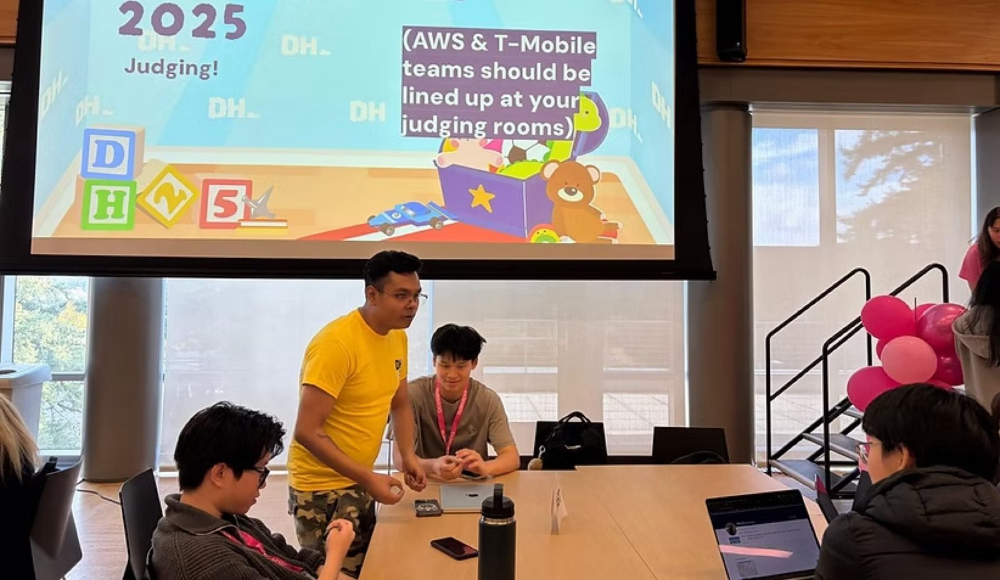
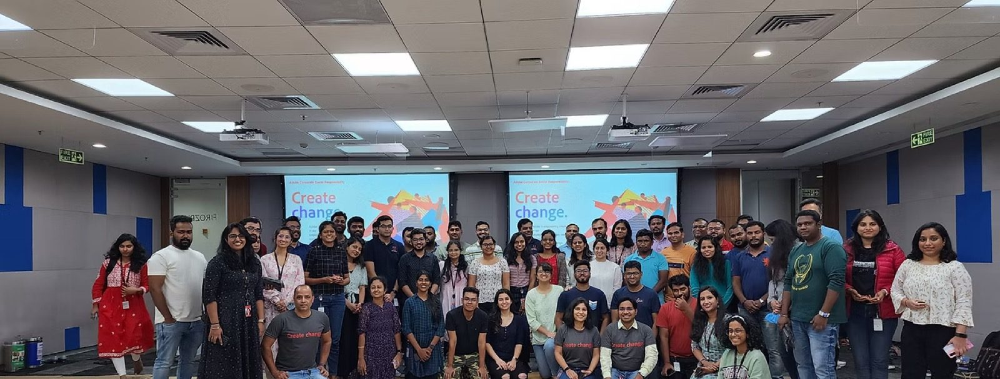
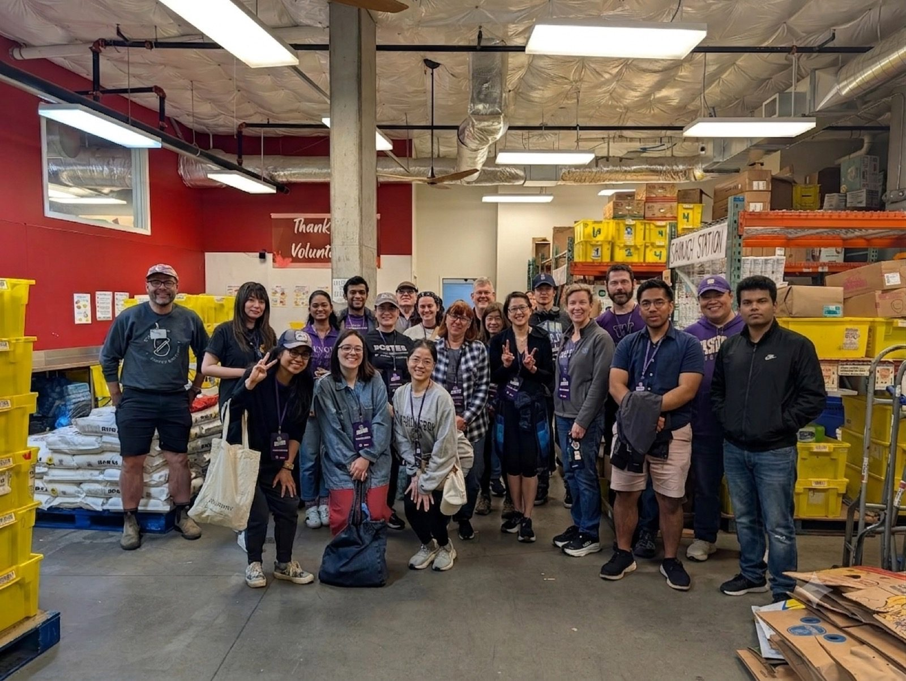
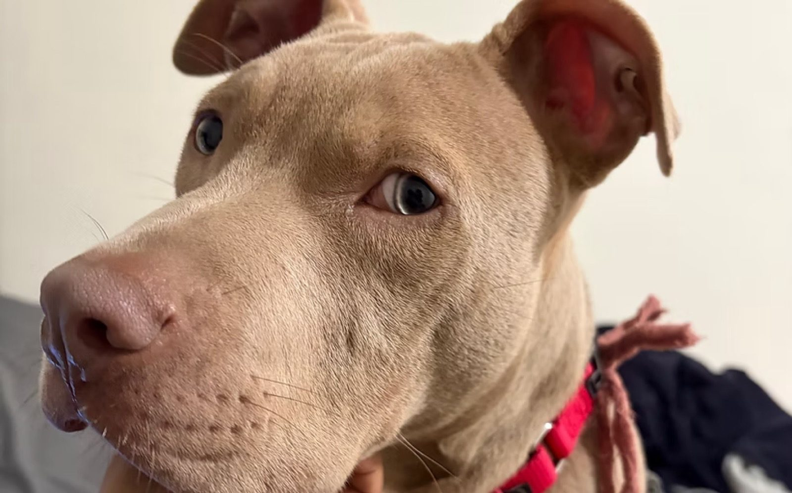

Start with the friction
Every meaningful product improvement starts with something that is broken, slow, or more complicated than it needs to be. I look for that before I look for solutions.
Product Manager. Builder. Someone who finds where things break and cannot leave them alone.
I'm Tunir. I've spent the last three years at Adobe doing work I'm genuinely proud of: launching products, solving complex problems for some of the world's biggest companies, and learning what it actually takes to ship things that matter at scale.
My background is in electronics and engineering, which gave me a deeply technical foundation. But what pulled me toward product was realizing that the most interesting problems are never just technical. They sit at the intersection of people, business, and technology. That is exactly where I like to work.
I led the 0-to-1 launch of an internal GenAI product at Adobe that hit 85% adoption in 14 days. I helped close major deals with Amazon, T-Mobile, LG, and Samsung. I built AI-powered systems that automated work across hundreds of terabytes of assets. The scale is real, but what I care about most is the clarity I brought to problems that did not have obvious answers yet.
Right now I'm at the University of Washington deepening my expertise in AI and data strategy, and thinking hard about what the next generation of autonomous, intelligent products looks like and how to build them right.
Every meaningful product improvement starts with something that is broken, slow, or more complicated than it needs to be. I look for that before I look for solutions.
The best roadmap in the world fails without the right people behind it. I invest heavily in cross-functional alignment because execution without buy-in is just noise.
I run on insights, not instincts alone. But I also know when the data is telling you what already happened and the real question is what comes next.
Users articulate problems. It is a PM's job to translate those into products they did not know they needed. Not just shipped, but right.
Agentic AI and data strategy. The next decade of product is going to be defined by systems that act, not just assist. Autonomous, real-time, and deeply integrated into how businesses operate.
I want to be one of the people building those systems, and setting the standard for how it is done. Not just shipping features, but defining what comes next.


Outside of product, I volunteer at the Seattle Animal Shelter and show up at hackathons to help builders turn rough ideas into something real. When I am not doing that, I am renovating small spaces or tinkering with hardware.
There is a common thread in all of it: finding something that needs a little care and making it better.

